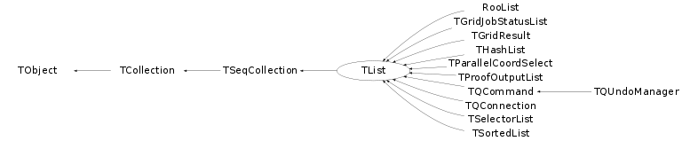

class TList: public TSeqCollection
TList A doubly linked list. All classes inheriting from TObject can be inserted in a TList. Before being inserted into the list the object pointer is wrapped in a TObjLink object which contains, besides the object pointer also a previous and next pointer. There are basically four ways to iterate over a TList (in order of preference, if not forced by other constraints): 1) Using the R__FOR_EACH macro: GetListOfPrimitives()->R__FOR_EACH(TObject,Paint)(option); 2) Using the TList iterator TListIter (via the wrapper class TIter): TIter next(GetListOfPrimitives()); while ((TObject *obj = next())) obj->Draw(next.GetOption()); 3) Using the TList iterator TListIter and std::for_each algorithm: A function object, which will be applied to each element of the given range. struct STestFunctor { bool operator()(TObject *aObj) { return true; } } TIter iter(mylist); for_each( iter.Begin(), TIter::End(), STestFunctor() ); 4) Using the TObjLink list entries (that wrap the TObject*): TObjLink *lnk = GetListOfPrimitives()->FirstLink(); while (lnk) { lnk->GetObject()->Draw(lnk->GetOption()); lnk = lnk->Next(); } 5) Using the TList's After() and Before() member functions: TFree *idcur = this; while (idcur) { idcur = (TFree*)GetListOfFree()->After(idcur); } Methods 2, 3 and 4 can also easily iterate backwards using either a backward TIter (using argument kIterBackward) or by using LastLink() and lnk->Prev() or by using the Before() member.

This class is also known as (typedefs to this class)
TTabCom::TContainerFunction Members (Methods)
public:
| TList() | |
| TList(TObject*) | |
| virtual | ~TList() |
| void | TObject::AbstractMethod(const char* method) const |
| virtual void | Add(TObject* obj) |
| virtual void | Add(TObject* obj, Option_t* opt) |
| virtual void | AddAfter(const TObject* after, TObject* obj) |
| virtual void | AddAfter(TObjLink* after, TObject* obj) |
| virtual void | TCollection::AddAll(const TCollection* col) |
| virtual void | AddAt(TObject* obj, Int_t idx) |
| virtual void | AddBefore(const TObject* before, TObject* obj) |
| virtual void | AddBefore(TObjLink* before, TObject* obj) |
| virtual void | AddFirst(TObject* obj) |
| virtual void | AddFirst(TObject* obj, Option_t* opt) |
| virtual void | AddLast(TObject* obj) |
| virtual void | AddLast(TObject* obj, Option_t* opt) |
| void | TCollection::AddVector(TObject* obj1) |
| virtual TObject* | After(const TObject* obj) const |
| virtual void | TObject::AppendPad(Option_t* option = "") |
| Bool_t | TCollection::AssertClass(TClass* cl) const |
| virtual TObject* | At(Int_t idx) const |
| virtual TObject* | Before(const TObject* obj) const |
| virtual void | TCollection::Browse(TBrowser* b) |
| Int_t | TCollection::Capacity() const |
| static TClass* | Class() |
| virtual const char* | TObject::ClassName() const |
| virtual void | Clear(Option_t* option = "") |
| virtual TObject* | TCollection::Clone(const char* newname = "") const |
| virtual Int_t | TCollection::Compare(const TObject* obj) const |
| Bool_t | TCollection::Contains(const char* name) const |
| Bool_t | TCollection::Contains(const TObject* obj) const |
| virtual void | TObject::Copy(TObject& object) const |
| virtual void | Delete(Option_t* option = "") |
| virtual Int_t | TObject::DistancetoPrimitive(Int_t px, Int_t py) |
| virtual void | TCollection::Draw(Option_t* option = "") |
| virtual void | TObject::DrawClass() constMENU |
| virtual TObject* | TObject::DrawClone(Option_t* option = "") constMENU |
| virtual void | TCollection::Dump() const |
| static void | TCollection::EmptyGarbageCollection() |
| virtual void | TObject::Error(const char* method, const char* msgfmt) const |
| virtual void | TObject::Execute(const char* method, const char* params, Int_t* error = 0) |
| virtual void | TObject::Execute(TMethod* method, TObjArray* params, Int_t* error = 0) |
| virtual void | TObject::ExecuteEvent(Int_t event, Int_t px, Int_t py) |
| virtual void | TObject::Fatal(const char* method, const char* msgfmt) const |
| virtual TObject* | FindObject(const char* name) const |
| virtual TObject* | FindObject(const TObject* obj) const |
| virtual TObject* | First() const |
| virtual TObjLink* | FirstLink() const |
| static void | TCollection::GarbageCollect(TObject* obj) |
| static TCollection* | TCollection::GetCurrentCollection() |
| virtual Option_t* | TObject::GetDrawOption() const |
| static Long_t | TObject::GetDtorOnly() |
| virtual Int_t | TCollection::GetEntries() const |
| virtual const char* | TObject::GetIconName() const |
| virtual Int_t | TSeqCollection::GetLast() const |
| virtual const char* | TCollection::GetName() const |
| virtual char* | TObject::GetObjectInfo(Int_t px, Int_t py) const |
| virtual TObject** | GetObjectRef(const TObject* obj) const |
| static Bool_t | TObject::GetObjectStat() |
| virtual Option_t* | TObject::GetOption() const |
| virtual Int_t | TCollection::GetSize() const |
| virtual const char* | TObject::GetTitle() const |
| virtual UInt_t | TObject::GetUniqueID() const |
| virtual Int_t | TCollection::GrowBy(Int_t delta) const |
| virtual Bool_t | TObject::HandleTimer(TTimer* timer) |
| virtual ULong_t | TCollection::Hash() const |
| virtual Int_t | TSeqCollection::IndexOf(const TObject* obj) const |
| virtual void | TObject::Info(const char* method, const char* msgfmt) const |
| virtual Bool_t | TObject::InheritsFrom(const char* classname) const |
| virtual Bool_t | TObject::InheritsFrom(const TClass* cl) const |
| virtual void | TObject::Inspect() constMENU |
| void | TObject::InvertBit(UInt_t f) |
| virtual TClass* | IsA() const |
| Bool_t | TCollection::IsArgNull(const char* where, const TObject* obj) const |
| Bool_t | IsAscending() |
| virtual Bool_t | TCollection::IsEmpty() const |
| virtual Bool_t | TObject::IsEqual(const TObject* obj) const |
| virtual Bool_t | TCollection::IsFolder() const |
| Bool_t | TObject::IsOnHeap() const |
| Bool_t | TCollection::IsOwner() const |
| virtual Bool_t | TCollection::IsSortable() const |
| virtual Bool_t | TSeqCollection::IsSorted() const |
| Bool_t | TObject::IsZombie() const |
| virtual TObject* | Last() const |
| Int_t | TSeqCollection::LastIndex() const |
| virtual TObjLink* | LastLink() const |
| virtual void | TCollection::ls(Option_t* option = "") const |
| virtual TIterator* | MakeIterator(Bool_t dir = kIterForward) const |
| virtual TIterator* | TCollection::MakeReverseIterator() const |
| void | TObject::MayNotUse(const char* method) const |
| Long64_t | TSeqCollection::Merge(TCollection* list) |
| virtual Bool_t | TObject::Notify() |
| static Int_t | TSeqCollection::ObjCompare(TObject* a, TObject* b) |
| void | TObject::Obsolete(const char* method, const char* asOfVers, const char* removedFromVers) const |
| static void | TObject::operator delete(void* ptr) |
| static void | TObject::operator delete(void* ptr, void* vp) |
| static void | TObject::operator delete[](void* ptr) |
| static void | TObject::operator delete[](void* ptr, void* vp) |
| void* | TObject::operator new(size_t sz) |
| void* | TObject::operator new(size_t sz, void* vp) |
| void* | TObject::operator new[](size_t sz) |
| void* | TObject::operator new[](size_t sz, void* vp) |
| TObject* | TCollection::operator()(const char* name) const |
| virtual void | TCollection::Paint(Option_t* option = "") |
| virtual void | TObject::Pop() |
| virtual void | TCollection::Print(Option_t* option = "") const |
| virtual void | TCollection::Print(Option_t* option, Int_t recurse) const |
| virtual void | TCollection::Print(Option_t* option, const char* wildcard, Int_t recurse = 1) const |
| virtual void | TCollection::Print(Option_t* option, TPRegexp& regexp, Int_t recurse = 1) const |
| static void | TSeqCollection::QSort(TObject** a, Int_t first, Int_t last) |
| static void | TSeqCollection::QSort(TObject** a, TObject** b, Int_t first, Int_t last) |
| static void | TSeqCollection::QSort(TObject** a, Int_t nBs, TObject*** b, Int_t first, Int_t last) |
| virtual Int_t | TObject::Read(const char* name) |
| virtual void | RecursiveRemove(TObject* obj) |
| virtual TObject* | Remove(TObject* obj) |
| virtual TObject* | Remove(TObjLink* lnk) |
| virtual void | TSeqCollection::RemoveAfter(TObject* after) |
| void | TCollection::RemoveAll() |
| virtual void | TCollection::RemoveAll(TCollection* col) |
| virtual TObject* | TSeqCollection::RemoveAt(Int_t idx) |
| virtual void | TSeqCollection::RemoveBefore(TObject* before) |
| virtual void | TSeqCollection::RemoveFirst() |
| virtual void | RemoveLast() |
| void | TObject::ResetBit(UInt_t f) |
| virtual void | TObject::SaveAs(const char* filename = "", Option_t* option = "") constMENU |
| virtual void | TObject::SavePrimitive(ostream& out, Option_t* option = "") |
| void | TObject::SetBit(UInt_t f) |
| void | TObject::SetBit(UInt_t f, Bool_t set) |
| void | TCollection::SetCurrentCollection() |
| virtual void | TObject::SetDrawOption(Option_t* option = "")MENU |
| static void | TObject::SetDtorOnly(void* obj) |
| void | TCollection::SetName(const char* name) |
| static void | TObject::SetObjectStat(Bool_t stat) |
| virtual void | TCollection::SetOwner(Bool_t enable = kTRUE) |
| virtual void | TObject::SetUniqueID(UInt_t uid) |
| virtual void | ShowMembers(TMemberInspector& insp) |
| virtual void | Sort(Bool_t order = kSortAscending) |
| static void | TCollection::StartGarbageCollection() |
| virtual void | Streamer(TBuffer& b) |
| void | StreamerNVirtual(TBuffer& b) |
| virtual void | TObject::SysError(const char* method, const char* msgfmt) const |
| Bool_t | TObject::TestBit(UInt_t f) const |
| Int_t | TObject::TestBits(UInt_t f) const |
| void | TSeqCollection::UnSort() |
| virtual void | TObject::UseCurrentStyle() |
| virtual void | TObject::Warning(const char* method, const char* msgfmt) const |
| virtual Int_t | TCollection::Write(const char* name = 0, Int_t option = 0, Int_t bufsize = 0) |
| virtual Int_t | TCollection::Write(const char* name = 0, Int_t option = 0, Int_t bufsize = 0) const |
protected:
| virtual void | TSeqCollection::Changed() |
| virtual void | DeleteLink(TObjLink* lnk) |
| virtual void | TObject::DoError(int level, const char* location, const char* fmt, va_list va) const |
| TObjLink** | DoSort(TObjLink** head, Int_t n) |
| TObjLink* | FindLink(const TObject* obj, Int_t& idx) const |
| virtual const char* | TCollection::GetCollectionEntryName(TObject* entry) const |
| TObjLink* | LinkAt(Int_t idx) const |
| Bool_t | LnkCompare(TObjLink* l1, TObjLink* l2) |
| void | TObject::MakeZombie() |
| virtual TObjLink* | NewLink(TObject* obj, TObjLink* prev = NULL) |
| virtual TObjLink* | NewOptLink(TObject* obj, Option_t* opt, TObjLink* prev = NULL) |
| virtual void | TCollection::PrintCollectionEntry(TObject* entry, Option_t* option, Int_t recurse) const |
| virtual void | TCollection::PrintCollectionHeader(Option_t* option) const |
Data Members
public:
| enum TCollection::[unnamed] { | kIsOwner | |
| kInitCapacity | ||
| kInitHashTableCapacity | ||
| }; | ||
| enum TObject::EStatusBits { | kCanDelete | |
| kMustCleanup | ||
| kObjInCanvas | ||
| kIsReferenced | ||
| kHasUUID | ||
| kCannotPick | ||
| kNoContextMenu | ||
| kInvalidObject | ||
| }; | ||
| enum TObject::[unnamed] { | kIsOnHeap | |
| kNotDeleted | ||
| kZombie | ||
| kBitMask | ||
| kSingleKey | ||
| kOverwrite | ||
| kWriteDelete | ||
| }; |
protected:
| Bool_t | fAscending | ! sorting order (when calling Sort() or for TSortedList) |
| TObjLink* | fCache | ! cache to speedup sequential calling of Before() and After() functions |
| TObjLink* | fFirst | ! pointer to first entry in linked list |
| TObjLink* | fLast | ! pointer to last entry in linked list |
| TString | TCollection::fName | name of the collection |
| Int_t | TCollection::fSize | number of elements in collection |
| Bool_t | TSeqCollection::fSorted | true if collection has been sorted |
Class Charts
{kind=link}
{kind=link}
{kind=link}
{kind=link}

Function documentation
~TList()
void AddFirst(TObject* obj, Option_t* opt)
Add object at the beginning of the list and also store option. Storing an option is useful when one wants to change the behaviour of an object a little without having to create a complete new copy of the object. This feature is used, for example, by the Draw() method. It allows the same object to be drawn in different ways.
void AddLast(TObject* obj, Option_t* opt)
Add object at the end of the list and also store option. Storing an option is useful when one wants to change the behaviour of an object a little without having to create a complete new copy of the object. This feature is used, for example, by the Draw() method. It allows the same object to be drawn in different ways.
void AddBefore(TObjLink* before, TObject* obj)
Insert object before the specified ObjLink object. If before = 0 then add to the head of the list. An ObjLink can be obtained by looping over a list using the above describe iterator method 3.
void AddAfter(TObjLink* after, TObject* obj)
Insert object after the specified ObjLink object. If after = 0 then add to the tail of the list. An ObjLink can be obtained by looping over a list using the above describe iterator method 3.
TObject * After(const TObject* obj) const
Returns the object after object obj. Obj is found using the object's IsEqual() method. Returns 0 if obj is last in list.
TObject * Before(const TObject* obj) const
Returns the object before object obj. Obj is found using the object's IsEqual() method. Returns 0 if obj is first in list.
void Clear(Option_t* option = "")
Remove all objects from the list. Does not delete the objects unless the TList is the owner (set via SetOwner()) and option "nodelete" is not set. If option="nodelete" then don't delete any heap objects that were marked with the kCanDelete bit, otherwise these objects will be deleted (this option is used by THashTable::Clear()).
void Delete(Option_t* option = "")
Remove all objects from the list AND delete all heap based objects. If option="slow" then keep list consistent during delete. This allows recursive list operations during the delete (e.g. during the dtor of an object in this list one can still access the list to search for other not yet deleted objects).
TObject * FindObject(const char* name) const
Find an object in this list using its name. Requires a sequential scan till the object has been found. Returns 0 if object with specified name is not found. This method overrides the generic FindObject() of TCollection for efficiency reasons.
TObject * FindObject(const TObject* obj) const
Find an object in this list using the object's IsEqual() member function. Requires a sequential scan till the object has been found. Returns 0 if object is not found. This method overrides the generic FindObject() of TCollection for efficiency reasons.
TObjLink * FindLink(const TObject* obj, Int_t& idx) const
Returns the TObjLink object that contains object obj. In idx it returns the position of the object in the list.
TObjLink * NewOptLink(TObject* obj, Option_t* opt, TObjLink* prev = NULL)
Return a new TObjOptLink (a TObjLink that also stores the option).
void RecursiveRemove(TObject* obj)
Remove object from this collection and recursively remove the object from all other objects (and collections).
TObject * Remove(TObjLink* lnk)
Remove object link (and therefore the object it contains) from the list.
Bool_t LnkCompare(TObjLink* l1, TObjLink* l2)
Compares the objects stored in the TObjLink objects. Depending on the flag IsAscending() the function returns true if the object in l1 <= l2 (ascending) or l2 <= l1 (descending).